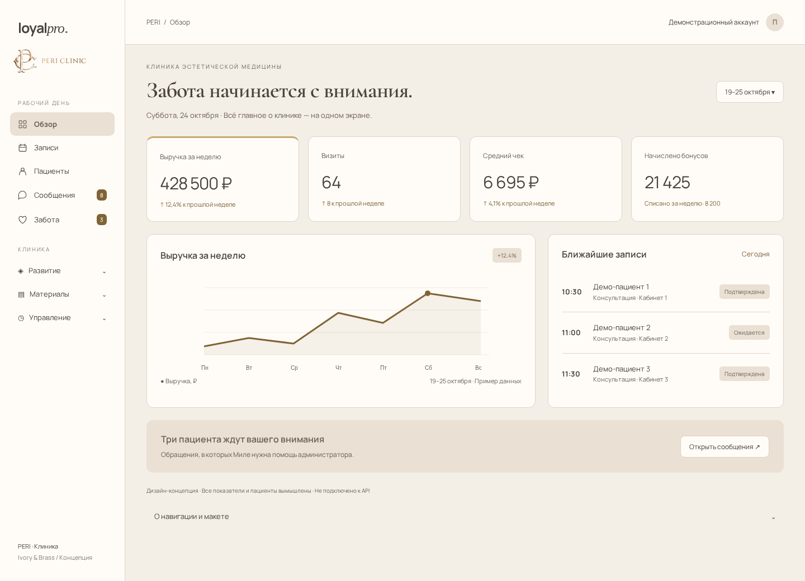
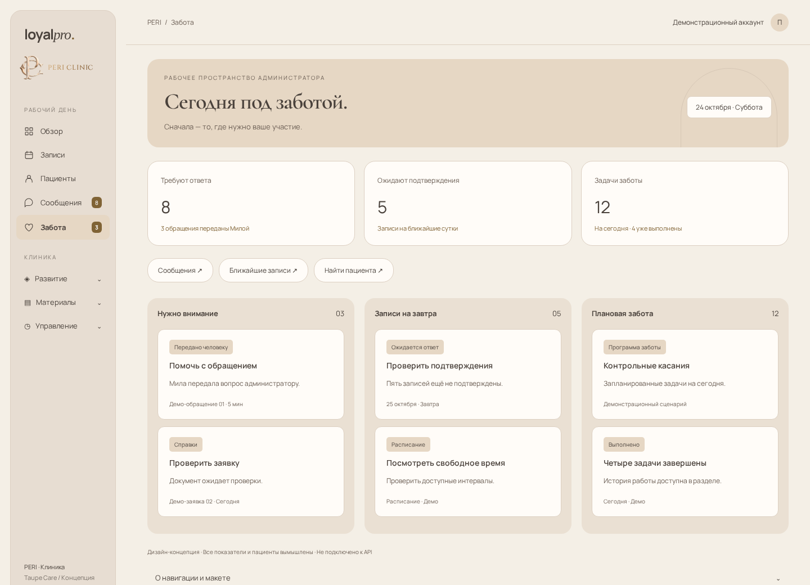
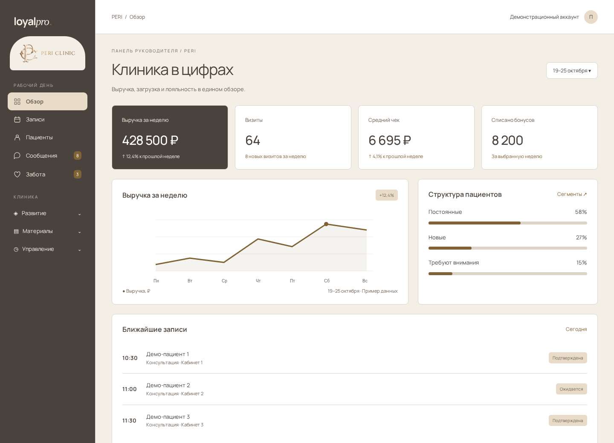

01 / Ivory & Brass
Айвори, сдержанная латунь, выразительный заголовок. Обзор клиники объединяет показатели, ближайшие записи и обращения, которым нужно внимание.
Три авторских визуальных референса для интерфейса сотрудников. Общая идея: спокойная клиническая эстетика, ясная навигация и нужные действия рядом с рабочей задачей.
Источник: /root/PERI_CONTENT_FACTORY/brand/BRAND.md и palette.json. Тауп #B7A89B, айвори #F4EFE6, латунь #C9A96B. Заголовки — Cormorant Garamond, текст — Manrope, подпись логотипа — Cinzel 500. Использована исходная монограмма. Мятный исключён; оливковые направления предыдущей версии заменены.

Айвори, сдержанная латунь, выразительный заголовок. Обзор клиники объединяет показатели, ближайшие записи и обращения, которым нужно внимание.

Тёплый тауп, светлые поверхности и мягкие формы. Главный экран администратора — очередь задач: обращения, подтверждения и забота. Фирменная арка деликатно оформляет приветственный блок.

Навигация в тёмном таупе, светлая рабочая область и латунные акценты. Более плотная компоновка для руководителя: выручка, сегменты и визиты.
Сейчас у владельца 15 пунктов верхнего меню, включая настройки и инструменты агента. Предложение: 5 ежедневных входов и 3 раскрывающиеся группы. Пункты внутри групп остаются отдельными страницами.
| Новый вход | Что внутри / откуда переносим |
|---|---|
| Обзор | Дашборд; для специалиста — его персональная панель |
| Записи | Текущий раздел записей |
| Пациенты | «Клиенты»; поиск, карточка, бонусы |
| Сообщения | «Чат»; обращения и передачи от Милы |
| Забота | Текущие программы и история напоминаний |
| Развитие | Сегменты, рассылки, вход в настройки лояльности |
| Материалы | Справки, домашний уход, фото-кейсы, база знаний |
| Управление | Сотрудники, экономика, настройки, пользователи, Мила и услуги агента |
Доступность каждого дочернего пункта определяется существующими правами. Названия групп не дают дополнительных разрешений. На телефоне — Обзор / Записи / Сообщения / Ещё; набор адаптируется к роли.
Для базового оформления выбрать Ivory & Brass: ближе всего передаёт типографику и светлую палитру PERI. Для ежедневной работы администратора использовать структуру главного экрана из Taupe Care. Руководителю оставить обзор показателей. Все три направления теперь используют палитру Instagram-айдентики.
Состав: 3 HTML-макета, общие стили, 3 изображения для компьютера, 3 для телефона и 3 PDF. Макеты демонстрационные, данные вымышлены, API не подключён. Новая очередь задач Taupe Care — предложение, её данные и поведение требуют отдельной проработки. Работающая система не изменена.